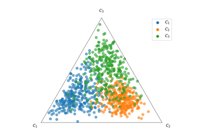
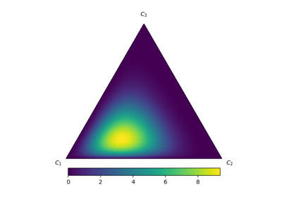
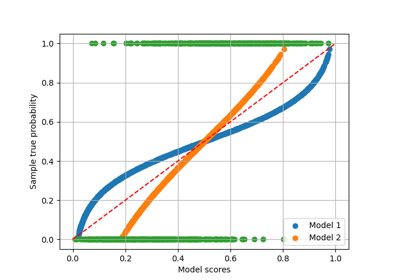

Visualisation Examples
Here you can find various examples of how to visualise if a model is calibrated.

Scatter plot of ternary problem in the simplex space
Scatter plot of ternary problem in the simplex space

Draw contour function of ternary simplex space
Draw contour function of ternary simplex space

Plotting reliability diagrams